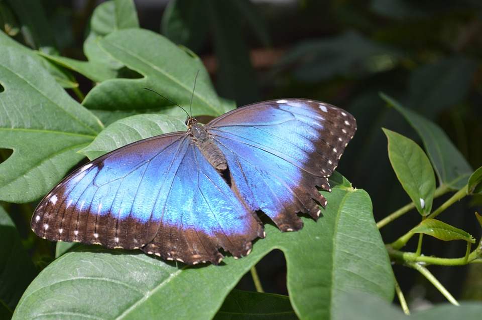

Información
La mariposa Morpho Azul (Morpho peleides) es una de las mariposas más grandes del mundo, con una envergadura de hasta 8 pulgadas de largo. Las mariposas Morpho Azul son conocidas por el espectacular azul de la parte superior de sus alas, que en realidad no se debe a un pigmento, sino a la configuración de escamas que reflejan la luz de manera que produce un aparente color azul iridiscente.